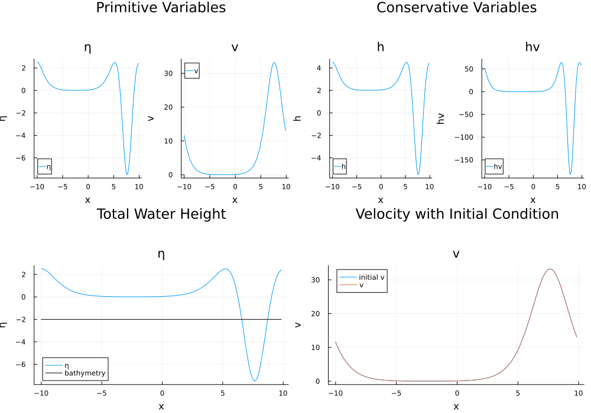
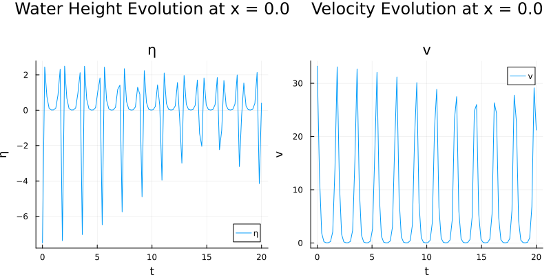
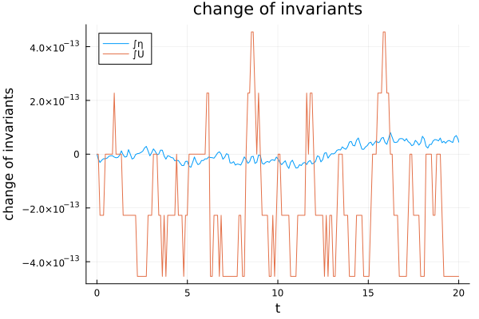

Plotting Simulation Results
DispersiveShallowWater.jl provides flexible plotting capabilities through Plots.jl recipes. The plotting system supports various conversion functions, visualization options, and analysis tools.
Makie.jl is not supported yet. Contributions are welcome.
Variable Conversion and Visualization Options
The plotting system supports different variable conversions and visualization options. You can plot conservative variables, specific physical quantities, and control what additional information is displayed:
using Plots
# Plot different variable representations
t = 13.37 # plot solution at (roughly) t = 13.37s
step_idx = argmin(abs.(saveat .- t)) # get the closest point to 13.37
p1 = plot(semi => sol, conversion = prim2prim, plot_bathymetry = false,
suptitle = "Primitive Variables", step = step_idx)
p2 = plot(semi => sol, conversion = prim2cons, plot_bathymetry = false,
suptitle = "Conservative Variables", step = step_idx)
p3 = plot(semi => sol, conversion = waterheight_total, plot_bathymetry = true,
suptitle = "Total Water Height", step = step_idx)
p4 = plot(semi => sol, conversion = velocity, plot_initial = true, plot_bathymetry = false,
suptitle = "Velocity with Initial Condition", step = step_idx)
plot(p1, p2, p3, p4, layout = (2, 2), size = (1000, 700))
Time Series Analysis at Spatial Points
You can analyze the temporal evolution of the solution at specific spatial locations. This is particularly useful for understanding wave propagation and local dynamics:
# Analyze solution at a single spatial point
x_location = 0.0
p1 = plot(semi => sol, x_location, conversion = waterheight_total,
suptitle = "Water Height Evolution at x = $x_location")
p2 = plot(semi => sol, x_location, conversion = velocity,
suptitle = "Velocity Evolution at x = $x_location")
plot(p1, p2, layout = (1, 2), size = (800, 400))
Energy and Momentum Evolution
Using the analysis callback results, we can visualize how conserved quantities evolve over time. The built-in plotting recipe shows the change of each invariant from its initial value:
# Plot conservation properties using the built-in recipe
# This shows how each conserved quantity deviates from its initial value over time
plot(analysis_callback2, exclude = (:velocity,))
The plot shows the change of invariants over time (i.e., integral(t) - integral(t=0)). The exclude parameter allows you to hide specific quantities from the plot - here we exclude velocity to focus on other conserved quantities.
Error Analysis Visualization
The error analysis compares the numerical solution with the initial condition evaluated at time t. Note that this represents the analytical solution only if the initial condition function describes an exact solution that varies with time:
# Plot error evolution using the built-in recipe
# The 'what' parameter controls what gets plotted: (:integrals,), (:errors,), or both
# The 'exclude' parameter removes specific error types from the plot
plot(analysis_callback2, what = (:errors,), exclude = (:conservation_error,))The what = (:errors,) parameter tells the plotting recipe to show errors instead of the default invariants. The errors plotted are the total errors summed over all variables (L² and L∞ norms). The exclude = (:conservation_error,) parameter removes the conservation error from the plot, focusing only on the discretization errors (L² and L∞).
The plotting system supports all standard Plots.jl features like custom color schemes, annotations, and interactive backends. For more advanced plotting options, consult the Plots.jl documentation.